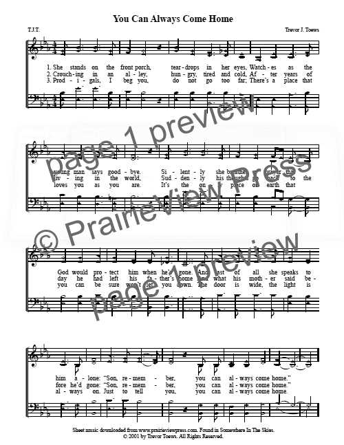

1187 You Can Always Come Home _Alan Jackson SE Samonte
|
¡@"You Can Always Come Home" |
¡@ |
|
Spread your wings, don't be afraid to try
The world can be hard, you gotta live a little 'fore you die
So open that door, step out in the bright sunshine
Follow your heart, and remember any time
You can always come home
Wherever life's road leads, you can get back
To a love that's strong and free
You never be alone, in your heart there's still a place
No matter how right or wrong you've gone
You can always come home
So pack your bags, smile and say goodbye
And chase those dreams, and when you lay down at night
You know that there's someone praying for you every day
Even if you never find your way
You can always come home
Wherever life's road leads, you can get back
To a love that's strong and free
You never be alone, in your heart there's still a place
No matter how right or wrong you've gone
You can always come home
When I was young, my daddy said to me
The very same words and I took those words with me
When I was afraid, I'd pull them out and think
Just how much they mean to me
You can always come home
Wherever life's road leads, you can get back
To a love that's strong and free
You never be alone, in your heart there's still a place
No matter how right or wrong you've gone
You can always come home
|
¡@ |
|

https://prairieviewpress.com/product/song-you-can-always-come-home/
|
|
¡@ |
¡@ |
 You Can Always Come Home
SE
Samonte
You Can Always Come Home
SE
Samonte
¡@
¡@¡§You
Can Always Come Home:¡¨ A Song Inspired by Jackson¡¦s Experience
Home is where we find comfort, peace, and love. Home is also defined as a family
to whom we run to in times of life¡¦s downfall. Our parents have been our
protector in life. They were our first teacher who has taught us how to walk,
smile and talk. As we grow older, we realize the things they have done for us.
The great sacrifices they have made to provide our needs and wants. Although
sometimes we might misunderstand them, in the end, they still love us.
You Can Always Come Home
Via thinglink.com
As a child, it is our obligation to give back the favor given by our parents.
Their great sacrifices are treasured as they get older because, without it, we
are not the person we are now. As we continue chasing our dreams, we must not
forget the persons who supported us in our way and they are no other than our
parents. In line with this is the song ¡§You Can Always Come Home.¡¨
¡§You Can Always Come Home¡¨
It is a deep ballad song written by Alan Jackson. The song was released in July
2015 as a single from his album, Angles and Alcohol. This album was produced by
Keith Stegall.
You Can Always Come Home. Alan Jackson
Via Alan Jackson¡¦s Facebook Page
According to Jackson, this song was inspired by his personal experience. He
shared that as her daughter went to college and be away from him, he remembered
the day he moved to Nashville.
MY LATEST POSTS
¡§It just reminded me of, when I came to Nashville, I didn¡¦t know anything about
it. It was a big move, and it was scary, and everybody thought we were crazy.¡¨
Jackson¡¦s father¡¦s words remain with him as he became a father.
¡§He didn¡¦t discourage me from going [to Nashville] or anything,¡¨ the singer
recalled, ¡§but he said, ¡¥You can always come home. If it doesn¡¦t work out, you
can always come back.¡¦ And it¡¦s true.¡¨
He shared that the life of a parent is their children. No matter how old they
become, they still want to take care of their children like they did before.
¡§When you¡¦re a parent, if you have kids, [no matter] how old they are, you¡¦re
always going to take them in and take care of them, or whatever, so they always
feel like they have a net,¡¨ Jackson continued. ¡§And so, when (second daughter)
Allie left to go out there, I wrote this song, and that¡¦s kind of what it¡¦s
about, really.¡¨
Listen to Alan Jackson¡¦s ¡§You Can Always Come Home¡¨ below:
https://youtu.be/_jTdnCbWJQE
https://www.countrythangdaily.com/you-can-always-come-home-by-alan-jackson/
¡@